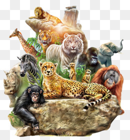

Hayvanlar Dunyasina Hosgeldiniz
 | ||||
| Bir milletin buyuklugu ve ahlaki gelisimi, hayvanlara olan davranis bicimi ile degerlendirilir. - Mahatma Gandhi | Canli hayvana iskence, eziyet edene lanet olsun. - Hz. Muhammed(s.a.v) | insanin insanlardan kacisidir, hayvan sevgisi. - Aziz Nesin | Hayvanlari sevmeyen insanlardan korkarim; cunku icinde hayvan sevgisi olmayan bir insanin insanlari sevmesi mumkun degildir. | |